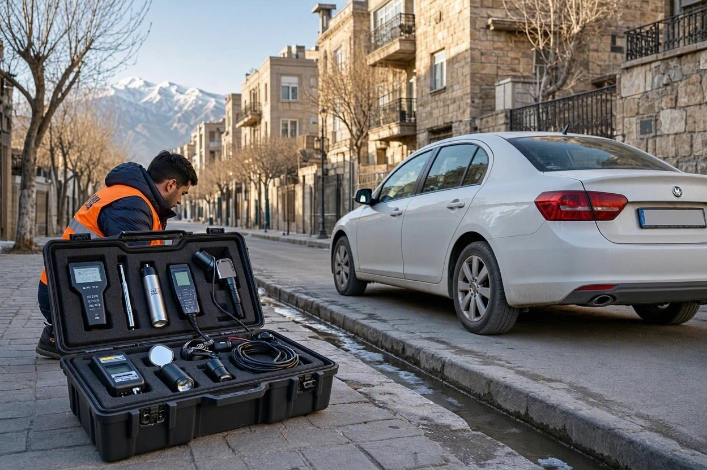
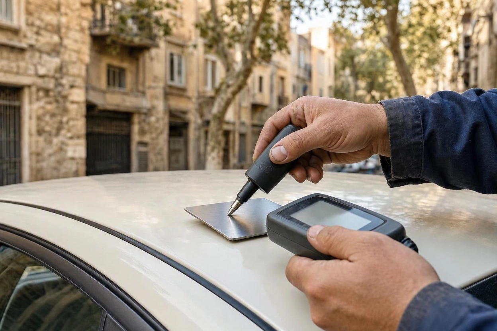
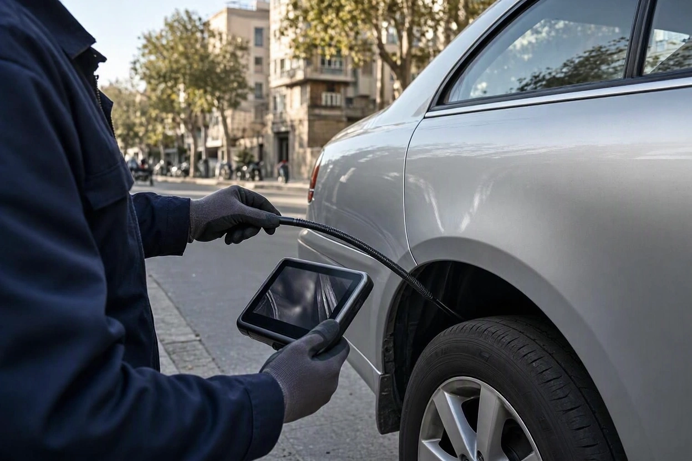
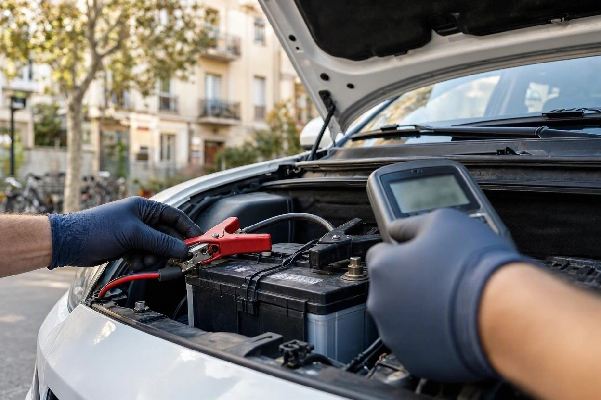
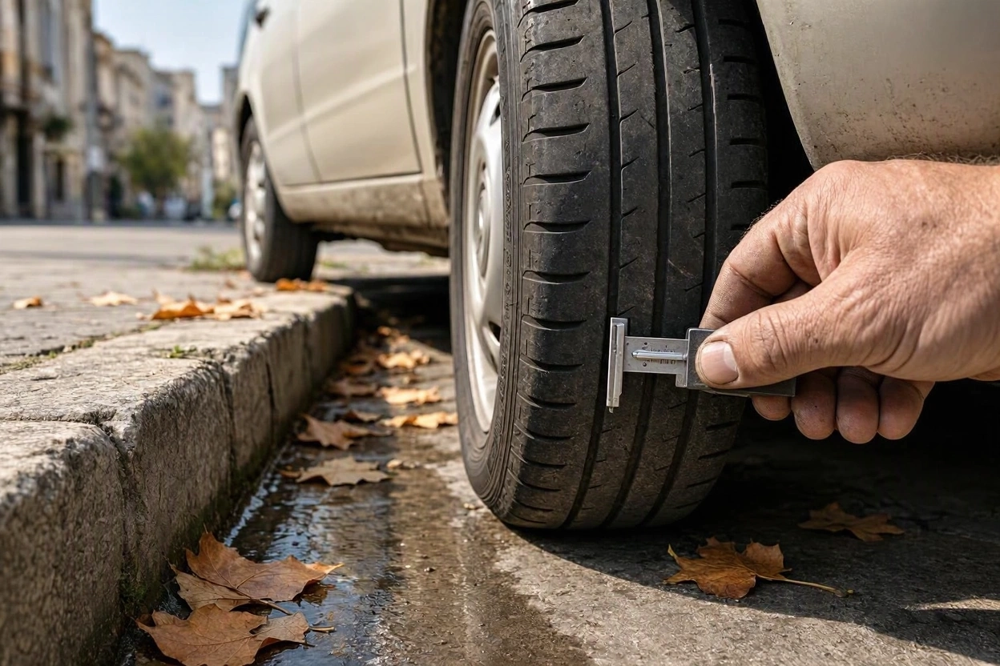

کارشناسی سیار خودرو چیست؟ کارشناس سیار چه ابزارهایی همراه دارد؟
زنگ در را میزنند. کارشناسی که برای دیدن سمند فروشنده هماهنگ کردهاید، با یک کیف ابزار رسیده و اولین کارش این است که دستگاه کوچکی را روی سقف ماشین بگذارد. فروشنده با لبخند میگوید «این دستگاهها همهاش نمایش است». شما هم مطمئن نیستید: این ابزارها واقعاً چیزی را نشان میدهند که با چشم دیده نمیشود، یا فقط کارشناسی را حرفهای جلوه میدهند؟
جواب در جزئیات است. هر ابزار کارشناس سیار برای یک سؤال مشخص ساخته شده و هیچکدام بهتنهایی جواب همهچیز نیست. در این راهنمای کارماچک میگوییم کارشناسی سیار دقیقاً چیست، در کیف ابزار کارشناس چه چیزهایی هست و هر دستگاه کجا جواب میدهد و کجا ساکت میماند.
کارشناسی سیار خودرو یعنی کارشناس با ابزار قابل حمل به محل خودرو میآید و رنگ، بدنه، شاسی، موتور، گیربکس و سیستمهای الکترونیکی را همانجا بررسی میکند. ابزارهای اصلی او ضخامتسنج رنگ، دستگاه دیاگ، چراغ قوهی پرنور، آینه یا آندوسکوپ، تستر باتری، تستر روغن ترمز و عمقسنج آج لاستیک هستند. تفسیر درست عددها کار تجربه است، نه خود دستگاه.
خلاصه در یک دقیقه
- کارشناسی سیار خودرو همان کارشناسی خودرو در محل است: به جای بردن ماشین به مرکز، کارشناس و ابزارش به سراغ ماشین میآیند.
- ضخامتسنج معمولی روی ورق فولادی و آلومینیومی کار میکند، اما روی سپر و قطعات پلاستیکی عدد قابل اتکایی نمیدهد.
- دیاگ خطاهای الکترونیکی را نشان میدهد، اما فرسودگی مکانیکی موتور و گیربکس را نه.
- ابزارهایی مثل عمقسنج آج، کد DOT لاستیک و تستر روغن ترمز سادهاند، اما هزینههای پنهان روزهای اول بعد از خرید را لو میدهند.
- معیار کارشناس خوب تعداد دستگاهها نیست؛ گزارشی است که عدد هر ابزار را به یک نتیجهی روشن تبدیل کند.
کارشناسی سیار خودرو چیست؟
کارشناسی سیار خودرو یعنی بررسی تخصصی ماشین در همان جایی که پارک شده است: جلوی خانهی فروشنده، پارکینگ آپارتمان، محل کار یا نمایشگاه. کارشناس با ابزارهای قابل حمل میآید و خریدار یا فروشنده نیازی به جابهجا کردن خودرو ندارد. در بازار ایران به همین خدمت کارشناسی خودرو در محل هم میگویند؛ دو اسم برای یک کار.
تفاوت اصلی با کارشناسی در مرکز، محیط کار است نه کیفیت ابزار. ضخامتسنج و دیاگ در کوچه همان عددی را نشان میدهند که در یک سالن. آنچه در محل در دسترس نیست، تجهیزات ثابت مثل بالابر یا اتاق نور است.
| ویژگی | کارشناسی سیار در محل | کارشناسی در مرکز ثابت |
|---|---|---|
| جابهجایی خودرو | لازم نیست | لازم است و فروشنده باید همراه شود |
| ابزار رنگ، بدنه و دیاگ | قابل حمل و همسطح مرکز | قابل حمل یا ثابت |
| بالابر و دید کامل زیر خودرو | معمولاً در دسترس نیست | معمولاً در دسترس است |
| وابستگی به نور و هوا | بیشتر | کمتر |
| بررسی موتور در حالت سرد | راحتتر، چون خودرو تا محل رانده نشده | سختتر، چون موتور در راه گرم شده |
ردیف آخر جدول را خیلیها نمیدانند. خودرویی که برای کارشناسی تا مرکز رانده شده، با موتور گرم میرسد و بخشی از نشانههای استارت سرد را از دست میدهد. در کارشناسی سیار، اگر هماهنگی درست باشد، کارشناس اولین روشن شدن روز را میبیند.
کیف ابزار کارشناس سیار در یک نگاه
این جدول ابزارهای رایج کارشناس سیار را با کاربرد و محدودیت هر کدام نشان میدهد. ستون سوم به اندازهی ستون دوم مهم است.
| ابزار | چه چیزی را نشان میدهد | چه چیزی را نشان نمیدهد |
|---|---|---|
| ضخامتسنج رنگ | رنگشدگی، بتونه و اختلاف ضخامت روی ورق فلزی | رنگ سپر پلاستیکی؛ قطعهی تعویضی با رنگ کارخانه |
| دستگاه دیاگ | کدهای خطا، دادهی زندهی سنسورها، وضعیت آمادگی سیستمها | فرسودگی مکانیکی که هنوز خطا ثبت نکرده |
| چراغ قوهی پرنور | موج بدنه، اختلاف رنگ، نشتی و ترک | آنچه پشت قطعات بسته است |
| آینه و آندوسکوپ | زیر موتور، پشت گلگیر، داخل ستونها و نقاط کور | جایی که دسترسی بدون باز کردن قطعه ممکن نیست |
| تستر باتری و مولتیمتر | سلامت باتری و ولتاژ شارژ دینام | ایرادهای برقی متناوب |
| تستر روغن ترمز | جذب رطوبت و نیاز به تعویض روغن ترمز | سلامت پمپ و لولههای ترمز |
| عمقسنج آج و کد DOT | میزان سایش و سن واقعی لاستیک | آسیب داخلی لاستیک |
| کمپرسسنج | فشار تراکم هر سیلندر و اختلاف بین آنها | علت دقیق افت فشار بدون بررسی تکمیلی |
ضخامت سنج رنگ؛ مهم ترین ابزار بدنه
ضخامتسنج رنگ ضخامت لایههای رنگ روی ورق بدنه را بر حسب میکرون اندازه میگیرد. رنگ کارخانه روی همهی قطعات یک خودرو تقریباً یکنواخت است؛ وقتی یک قطعه عدد بالاتری نشان میدهد، احتمال رنگشدگی یا بتونه بالا میرود.
نکتهی فنیای که کمتر گفته میشود: ضخامتسنجهای رایج دو حالت دارند. حالت Fe برای ورق فولادی است و حالت NFe برای فلزهای غیرآهنی مثل آلومینیوم. دستگاهی که فقط حالت Fe دارد، روی کاپوت یا درب آلومینیومی بعضی خودروهای وارداتی عدد نمیدهد. اگر خودروی مورد نظرتان قطعات آلومینیومی دارد، از کارشناس بپرسید دستگاهش دوحالته است یا نه.

جایی که ضخامت سنج ساکت می ماند
- سپر و قطعات پلاستیکی: ضخامتسنجهای معمولی برای کار به زیرلایهی فلزی نیاز دارند و روی پلاستیک عدد نمیدهند. نسخههای فراصوتی برای پلاستیک وجود دارند، اما روی سپرهای انعطافپذیر هم دقتشان محدود است. بررسی سپر بیشتر به چشم و نور کارشناس متکی است.
- قطعهی تعویضی با رنگ کارخانه: درب یا گلگیری که نو و با رنگ کارخانهای نصب شده، ممکن است عدد کاملاً عادی بدهد. تشخیص این حالت از روی پیچهای باز و بستهشده، درزها، چسبهای آببندی و برچسبها انجام میشود.
- عدد بدون مقایسه: عدد ضخامت را باید با قطعههای سالم همان خودرو مقایسه کرد، نه با یک عدد ثابت برای همهی ماشینها.
دستگاه دیاگ؛ زبان الکترونیکی خودرو
دستگاه دیاگ به سوکت عیبیابی خودرو، معمولاً زیر داشبورد، وصل میشود و با واحدهای کنترل الکترونیکی صحبت میکند. سه خروجی مهم دارد: کدهای خطای ثبتشده، دادهی زندهی سنسورها مثل دمای آب و دور موتور، و وضعیت آمادگی سیستمها که نشان میدهد حافظهی خطا اخیراً پاک شده یا نه.
همهی دیاگها با همهی خودروها یکسان کار نمیکنند. دیاگهای عمومی بخش موتور را در بیشتر خودروها میخوانند، اما برای دسترسی به گیربکس اتوماتیک، ایربگ یا ترمز ABS بعضی خودروهای ایرانی و چینی، به نرمافزار سازگار با همان برند نیاز است. پیش از رزرو، مدل دقیق خودرو را به کارشناس بگویید.
دیاگ محدودیت مهمی هم دارد: فقط چیزی را میبیند که الکترونیک خودرو ثبت کرده باشد. صدای یاتاقان، لقی جلوبندی یا روغنسوزی آرام موتور خطایی در دیاگ ایجاد نمیکنند. مرز دقیق این دستگاه را در مطلب دیاگ خودرو قبل از خرید توضیح دادهایم.
چراغ قوه، آینه و آندوسکوپ؛ دیدن جاهای کور
سادهترین ابزار کیف، چراغ قوهی پرنور، یکی از پرکاربردترینهاست. نور مایل روی بدنه، موج صافکاری و اختلاف جزئی رنگ را بهتر از نور روبهرو نشان میدهد. زیر کاپوت هم نشتی روغن، ترک شیلنگها و آثار جوشکاری با همین نور دیده میشوند.
آینهی دستهدار و دوربین آندوسکوپی، کمبود بالابر را تا حد زیادی جبران میکنند. دوربین آندوسکوپ یک کابل باریک با لنز و نور است که تصویر را روی نمایشگر یا گوشی نشان میدهد. با آن میشود پشت گلگیرها، داخل ستونها، زیر سینی موتور و جاهایی را دید که چشم به آنها نمیرسد.

بعضی کارشناسها از آندوسکوپ برای دیدن داخل سیلندر هم استفاده میکنند. این کار نیاز به باز کردن شمع دارد و فقط با اجازهی فروشنده و در صورت شک جدی به موتور انجام میشود.
کارشناس با کیف ابزار کامل، به آدرس شما
مدل خودرو را هنگام رزرو اعلام کنید؛ کارشناس کارماچک با ابزار قابل حمل کارشناسی به محل خودرو میآید و نتیجهی بررسی را در گزارش کتبی مینویسد.
رزرو کارشناسی خودرو در محلابزارهای کوچک با اثر بزرگ
این ابزارها کوچک و ارزاناند، اما دقیقاً همان هزینههایی را نشان میدهند که خریدار در ماه اول بعد از خرید با آنها روبهرو میشود.
تستر باتری و مولتی متر
تستر باتری سلامت باتری را میسنجد و نشان میدهد باتری چقدر از توان اولیهاش را حفظ کرده است. با مولتیمتر هم ولتاژ شارژ در حالت روشن بودن موتور اندازهگیری میشود تا معلوم شود دینام درست شارژ میکند یا نه. باتری ضعیف معمولاً اولین سرمای زمستان خودش را نشان میدهد.

تستر روغن ترمز
روغن ترمز با گذشت زمان رطوبت جذب میکند و نقطهی جوشش آن پایین میآید. تستر روغن ترمز، که معمولاً یک قلم کوچک است، میزان رطوبت را میسنجد. نتیجهی آن به خریدار میگوید روغن ترمز باید تعویض شود یا نه؛ نکتهای که روی ایمنی ترمز در سرازیریهای طولانی اثر مستقیم دارد.
عمق سنج آج و کد DOT لاستیک
عمقسنج آج میزان سایش لاستیک را عددی نشان میدهد. اما مهمتر از آج، سن لاستیک است. روی دیوارهی هر لاستیک یک کد DOT هست که چهار رقم آخرش هفته و سال تولید را نشان میدهد؛ مثلاً ۲۲۱۹ یعنی هفتهی بیستودوم سال ۲۰۱۹. لاستیکی که آج کافی دارد اما سالها از تولیدش گذشته، ممکن است ترک خورده و سفت شده باشد.

کمپرس سنج
کمپرسسنج فشار تراکم هر سیلندر را اندازه میگیرد. اختلاف زیاد بین سیلندرها میتواند نشانهی فرسودگی رینگ، سوپاپ یا واشر سرسیلندر باشد. این تست نیاز به باز کردن شمعها دارد و جزو بررسیهای تکمیلی است که در صورت دود، افت قدرت یا روغنسوزی مشکوک انجام میشود.
ابزارهای ساده ای که نباید جا بمانند
- زیرانداز و دستکش برای بررسی زیر خودرو و موتور
- آهنربای کوچک برای حدس زدن بتونهی ضخیم در کنار ضخامتسنج
- ذرهبین برای دیدن حکاکی شماره شاسی و آثار دستکاری
- دوربین یا گوشی برای ثبت عکس از هر یافته در گزارش
ابزار مهم تر است یا چشم کارشناس؟
راستش را بخواهید، ابزار عدد میدهد و کارشناس معنا. ضخامتسنج میگوید درب جلو دو برابر سقف رنگ دارد؛ کارشناس است که تشخیص میدهد این یعنی یک رنگ ساده یا بتونهی زیر رنگ، و آیا ستون کنار همان درب هم آسیب دیده یا نه.
همین منطق دربارهی دیاگ هم صدق میکند. یک کد خطای سنسور اکسیژن ممکن است با تعویض یک قطعهی ارزان حل شود یا نشانهی مشکل جدیتر در احتراق باشد. دستگاه این تفاوت را نمیگوید.
کارماچک یک مجموعهی ارائهدهندهی خدمات کارشناسی خودرو در ایران است و گزارشهایش را بر همین مبنا مینویسد: فقط ایراد خودرو را شناسایی نمیکنیم؛ اثر آن روی هزینه تعمیر و ارزش واقعی معامله را هم مشخص میکنیم. برای تبدیل یافتهها به عدد در معامله هم میتوانید از قیمتگذاری خودرو کمک بگیرید.
کدام ابزار برای کدام خودرو حیاتی است؟
همهی ابزارها برای همهی خودروها یک اندازه مهم نیستند. این جدول نشان میدهد تمرکز کارشناسی سیار بسته به نوع خودرو کجاست:
| نوع خودرو | ابزارهای کلیدی | دلیل |
|---|---|---|
| خودروی ایرانی پرکار مثل پراید، ۲۰۶ یا سمند | ضخامتسنج، چراغ و آینه، کمپرسسنج در صورت شک | سابقهی تصادف و فرسودگی موتور دو ریسک اصلی این خودروهاست |
| خودرو با گیربکس اتوماتیک | دیاگ سازگار با گیربکس و تست رانندگی | خطاهای گیربکس فقط با دیاگ مخصوص و در حرکت دیده میشوند |
| خودروی وارداتی با قطعات آلومینیومی | ضخامتسنج دوحالته Fe و NFe | دستگاه تکحالته روی آلومینیوم عدد نمیدهد |
| خودروی کمکار که مدتها پارک بوده | تستر باتری، کد DOT لاستیک، تستر روغن ترمز | باتری، لاستیک و مایعات با گذشت زمان فرسوده میشوند، نه فقط با کارکرد |
| خودروی هیبرید یا برقی | دیاگ اختصاصی برای سلامت باتری کششی | باتری کششی گرانترین قطعه است و ابزار عمومی وضعیتش را نشان نمیدهد |
از کجا بفهمید کارشناس ابزار درست آورده؟
لازم نیست خودتان متخصص باشید. با چند سؤال و چند نگاه ساده میشود فهمید کارشناس سیار با تجهیزات و روش درست آمده است:
- پیش از رزرو بپرسید دستگاه دیاگ با برند و مدل خودروی شما سازگار است یا نه.
- اگر خودرو قطعات آلومینیومی دارد، بپرسید ضخامتسنج دوحالته است یا نه.
- ببینید کارشناس پیش از شروع، ضخامتسنج را روی صفحهی مرجع کالیبره میکند یا نه.
- دقت کنید روی هر قطعه چند نقطه اندازهگیری میشود، نه فقط یک نقطه.
- ببینید کارشناس اول موتور سرد را روشن میکند و بعد سراغ بقیهی تستها میرود.
- گزارش کتبی بخواهید که عدد هر قطعه، کدهای دیاگ و موارد بررسینشده را صریح بنویسد.
چه کارهایی در کارشناسی سیار انجام نمی شود؟
شفافیت دربارهی مرزهای کارشناسی سیار، بخشی از دقت آن است. این کارها معمولاً در محل انجام نمیشوند و در صورت نیاز باید در تعمیرگاه یا مرکز تخصصی پیگیری شوند:
- باز کردن قطعات بدنه یا تودوزی برای دیدن شاسی پشت آن
- بررسی کامل زیر خودرو روی بالابر
- باز کردن موتور یا گیربکس برای دیدن قطعات داخلی
- آنالیز آزمایشگاهی روغن موتور
بیشتر این محدودیتها با هماهنگی درست و یک بررسی تکمیلی کوتاه قابل جبراناند. توضیح کامل هر محدودیت و راهحلش را در مطلب دقت و محدودیتهای کارشناسی در محل آوردهایم.
جمع بندی: کارشناسی سیار خودرو با ابزار درست و تفسیر درست
کارشناسی سیار خودرو همان بررسی تخصصی است که به جای مرکز، در محل خودرو انجام میشود. ضخامتسنج، دیاگ، چراغ، آندوسکوپ و تسترهای کوچک هر کدام یک تکه از تصویر را نشان میدهند و هیچکدام بهتنهایی کافی نیستند. ارزش واقعی در کارشناسی است که این تکهها را کنار هم بگذارد و به یک نتیجهی روشن برساند.
اگر خودروی مورد نظرتان را پیدا کردهاید، مدل دقیقش را هنگام رزرو اعلام کنید تا کارشناس با ابزار مناسب همان خودرو بیاید. کارشناسی خودرو در محل را برای ساعت روشن روز و با موتور سرد هماهنگ کنید.
کارشناس سیار را به محل خودرو بیاورید
آدرس، ساعت و مدل خودرو را ثبت کنید؛ کارشناس کارماچک خودرو را همانجا بررسی میکند و گزارش کتبی تحویل میدهد.
ثبت درخواست کارشناسی خودرو در محلسؤالات متداول
کارشناسی سیار خودرو با کارشناسی در محل فرق دارد؟
نه، هر دو اسم به یک خدمت اشاره دارند: کارشناس با ابزار قابل حمل به جایی میآید که خودرو پارک شده و همانجا رنگ، بدنه، شاسی، فنی و دیاگ را بررسی میکند. تفاوتی که گاهی دیده میشود، در پکیج و ابزار هر مجموعه است، نه در اسم خدمت.
آیا ضخامت سنج روی سپر هم کار میکند؟
ضخامتسنجهای معمولی روی سپر و قطعات پلاستیکی عدد نمیدهند، چون برای اندازهگیری به زیرلایهی فلزی نیاز دارند. مدلهای فراصوتی برای پلاستیک ساخته شدهاند، اما دقتشان روی سپرهای انعطافپذیر محدود است. به همین دلیل بررسی سپر بیشتر با نور مناسب و چشم کارشناس انجام میشود.
دیاگ معمولی برای خودروهای ایرانی کافی است؟
برای خواندن خطاهای موتور در بیشتر خودروها کافی است. اما برای گیربکس اتوماتیک، ایربگ، ترمز ABS و بعضی سیستمهای دیگر خودروهای ایرانی و چینی، نرمافزار سازگار با همان برند لازم است. پیش از رزرو، مدل دقیق خودرو را اعلام کنید تا کارشناس دیاگ مناسب بیاورد.
کمپرس گرفتن جزو کارشناسی سیار است؟
معمولاً جزو بررسی پایه نیست و یک بررسی تکمیلی محسوب میشود، چون به باز کردن شمعها نیاز دارد. وقتی دود غیرعادی، افت قدرت یا شک به روغنسوزی وجود دارد، با اجازهی فروشنده انجام میشود. این تست باید بعد از بررسی استارت سرد انجام شود.
سن لاستیک را چطور خودم بفهمم؟
روی دیوارهی لاستیک یک کد با حروف DOT شروع میشود. چهار رقم آخر این کد هفته و سال تولید است؛ مثلاً ۰۸۲۱ یعنی هفتهی هشتم سال ۲۰۲۱. این کد را روی هر چهار لاستیک و زاپاس ببینید، چون ممکن است لاستیکها در زمانهای متفاوتی عوض شده باشند.
کارشناس سیار چقدر زمان لازم دارد؟
زمان بازدید به پکیج انتخابی، نوع خودرو و ابزارهایی که لازم میشود بستگی دارد. بررسی رنگ و بدنه سریعتر از کارشناسی کامل فنی با دیاگ، تست رانندگی و تستهای تکمیلی تمام میشود. مهم این است که فروشنده از قبل بداند بررسی کامل وقت میبرد و وسط کار عجله نکند.